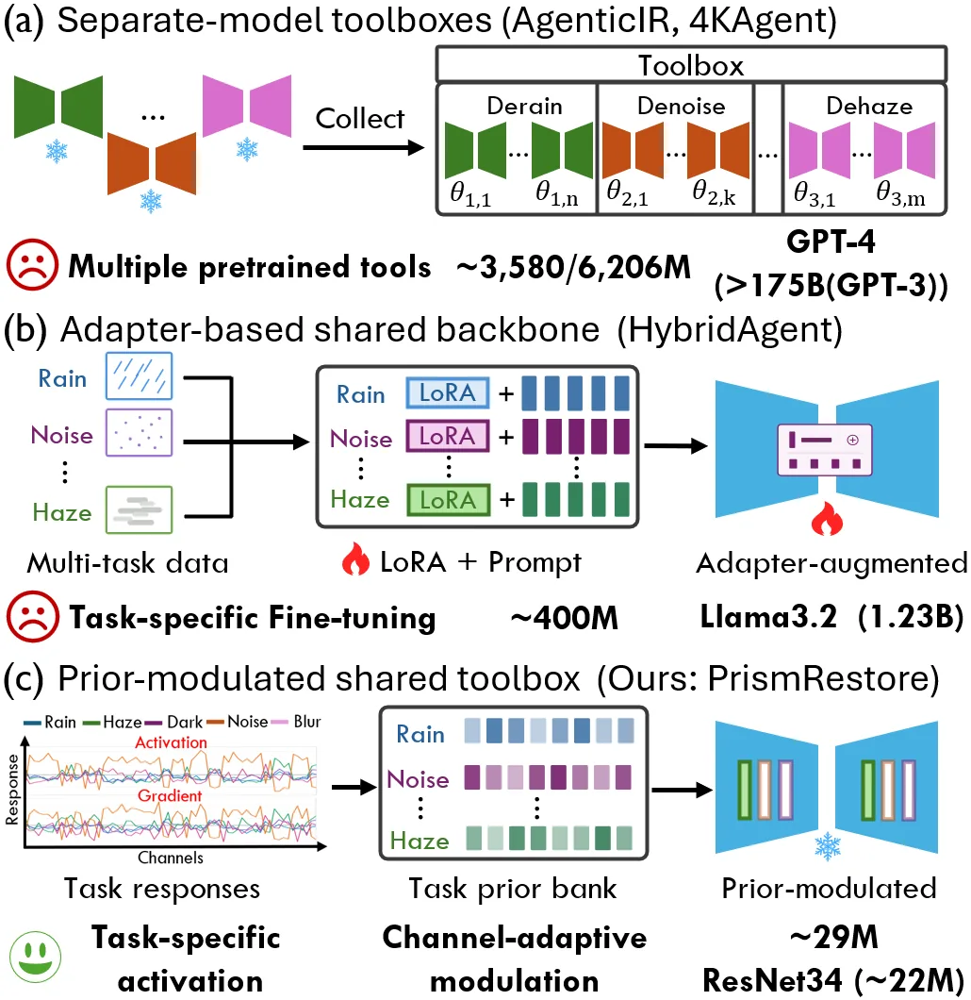
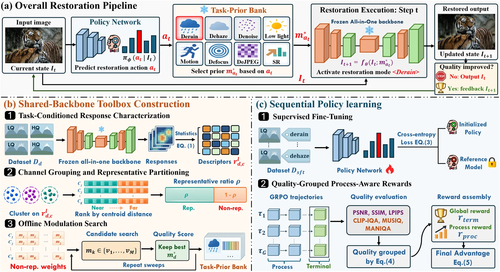
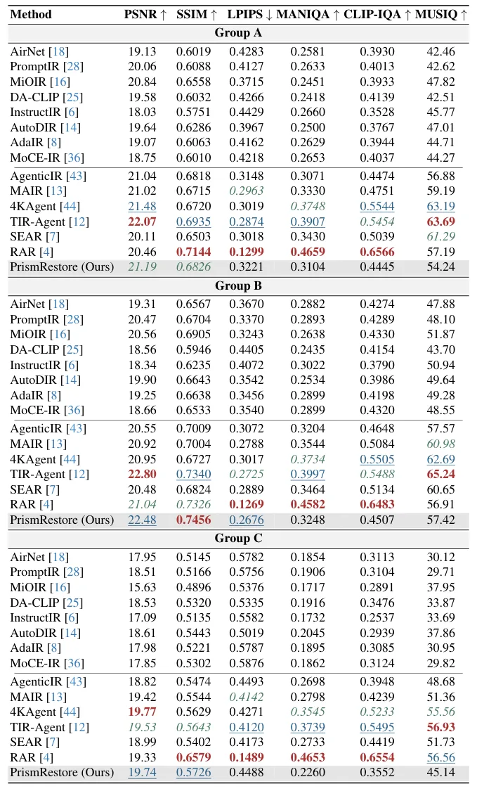
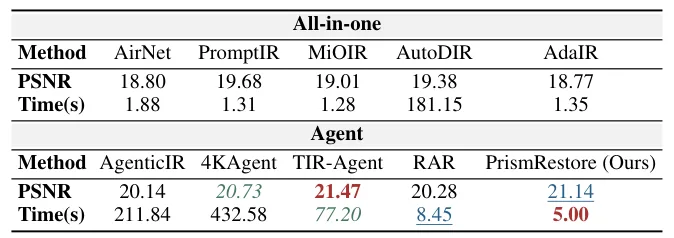

O Custo Oculto da Restauração Agêntica
A restauração de imagens capturadas em ambientes não controlados é um problema complexo. Raramente uma imagem sofre apenas um tipo de degradação; é comum encontrar misturas de ruído, desfoque, neblina e artefatos de baixa luminosidade. Abordagens tradicionais, como modelos específicos para tarefas (task-specific models), exigem treinar e armazenar uma rede diferente para cada problema. Para lidar com combinações imprevisíveis, surgiram os sistemas agênticos (agentic systems). Esses sistemas não aplicam uma única correção; eles avaliam o estado da imagem, planejam uma sequência de operações e invocam ferramentas de restauração de forma adaptativa.
No entanto, essa flexibilidade tem um preço alto em termos de infraestrutura. A maioria dos agentes de restauração de imagem (AgenticIR) constrói sua 'caixa de ferramentas' (toolbox) instanciando múltiplas redes de restauração independentes ou usando adaptadores pesados, como LoRA, para cada tarefa. Isso significa que, para cobrir um conjunto de degradações, o sistema precisa carregar na memória vários backbones completos ou grandes conjuntos de parâmetros de adaptação. Esse overhead de armazenamento e inferência limita a escalabilidade desses métodos em dispositivos com recursos restritos ou em aplicações que exigem baixa latência.
Os autores deste paper questionam se é possível manter a flexibilidade de um sistema agêntico sem duplicar o backbone de restauração. A premissa central é que um único modelo 'all-in-one' (tudo-em-um), já capaz de lidar com várias degradações, pode servir como base para uma caixa de ferramentas compacta. A chave está em como parametrizeamos essas ações dentro do modelo compartilhado. Em vez de adicionar novos pesos, podemos modificar o comportamento do modelo existente através de modulação de canais, mantendo os pesos originais congelados.

A Ideia: Modulação de Canais como Ação
O PrismRestore propõe uma arquitetura onde a caixa de ferramentas é construída a partir de um único modelo all-in-one congelado. A inovação reside na criação de 'prioris de restauração' (restoration priors). Cada prior é um conjunto de coeficientes de modulação que, quando aplicado ao backbone, transforma o comportamento geral do modelo em uma ação específica de restauração (por exemplo, 'remover ruído' ou 'desembaçar'). Esses priors são pré-computados offline e armazenados em um banco de dados compacto. Durante a inferência, um agente seleciona um prior do banco e o aplica ao modelo congelado para produzir o próximo passo da restauração.
Mas como definir esses coeficientes sem treinar o modelo do zero? Os autores analisaram as estatísticas de ativação e gradiente dos canais em uma rede all-in-one (AdaIR). Descobriram que, embora tarefas diferentes ativem canais distintos, existe uma sobreposição significativa. Canais 'representativos' capturam características comuns a várias tarefas, enquanto canais 'não-representativos' são mais especializados. A estratégia do PrismRestore é agrupar canais por perfis de resposta semelhantes e aplicar modulação apenas nos não-representativos, deixando os representativos inalterados. Isso permite que a ação de restauração seja diferenciada sem destruir a informação compartilhada essencial para a qualidade geral da imagem.
Essa abordagem elimina a necessidade de módulos adaptadores específicos por tarefa (como LoRA ou Prompt Tuning) que são comuns em métodos híbridos. O armazenamento necessário se reduz drasticamente: apenas o backbone pré-treinado e os pequenos vetores de prior. Isso resolve o gargalo de memória, permitindo que agentes complexos operem com uma pegada de modelo mínima.
Construção da Caixa de Ferramentas: Do Offline ao Online
O processo de construção da caixa de ferramentas ocorre offline e consiste em três etapas principais. Primeiro, caracterização de resposta condicional à tarefa. Para cada tarefa de restauração (ex: remoção de chuva, aumento de luminosidade), os autores coletam estatísticas de ativação e gradiente ponderado por gradiente em uma rede frozen. Eles calculam descritores que capturam a magnitude da ativação e a sensibilidade ao erro de reconstrução para cada canal. Esses descritores são normalizados e usados para agrupar canais com comportamentos similares.
A segunda etapa é o agrupamento de canais e a partição representativa. Utilizando K-means, os canais são agrupados em clusters. Dentro de cada cluster, os canais são ordenados pela sua distância ao centróide. Um ratio de representatividade (ρ) é usado para separar os canais: os mais próximos ao centróide (representativos) são mantidos fixos, enquanto os mais distantes (não-representativos) são candidatos à modulação. Isso garante que a estrutura fundamental da rede, responsável por features gerais, não seja perturbada.
Na terceira etapa, busca offline de modulação. Para cada cluster de canais não-representativos, os autores buscam coeficientes de modulação ótimos. Esses coeficientes multiplicam as ativações dos canais, amplificando ou atenuando sua resposta para a tarefa específica. A busca é feita avaliando a qualidade da imagem em um conjunto de dados de validação para a tarefa. O resultado é um banco de prioris, onde cada prior define um 'modo' de restauração. Esses modos são então expostos ao agente online como ações discretas disponíveis.

O Agente: Composição de Ações com GRPO
Ter uma caixa de ferramentas não é suficiente; é preciso saber quando e como usá-la. O PrismRestore treina um agente (policy network) que observa o estado atual da imagem degradada e seleciona a ação (prior) mais adequada. Diferente de métodos que treinam o agente e o modelo simultaneamente, aqui o backbone é congelado. O agente é treinado usando Group Relative Policy Optimization (GRPO). O GRPO é uma variação do PPO (Proximal Policy Optimization) que é mais eficiente em termos de memória e estável para tarefas de raciocínio sequencial.
O treinamento do agente é desafiador porque a qualidade da imagem deve ser avaliada em duas dimensões: fidelidade (quão perto está do original, em dados sintéticos) e percepção (quão natural parece, em dados reais). Combinar essas métricas diretamente é problemático, pois elas têm escalas diferentes e podem ser conflitantes. Para resolver isso, os autores normalizam separadamente os feedbacks de fidelidade e percepção dentro de grupos de trajetórias amostradas para a mesma imagem. Isso permite que o agente aprenda a equilibrar as duas métricas sem que uma domine a outra devido à sua magnitude numérica.
Além disso, o objetivo do agente considera a mudança de qualidade passo a passo (return-to-go). Em vez de apenas olhar para o resultado final, o agente é recompensado por melhorias incrementais a cada ação. Isso incentiva a composição inteligente de operações: uma ação pode não resolver tudo, mas prepara o terreno para a próxima. O pipeline inclui um critério de parada guiado pela qualidade: se uma ação piora a percepção da imagem, ela é descartada e o estado anterior é mantido, evitando degradações irreversíveis.
Resultados: Qualidade e Eficiência
Os experimentos foram realizados em benchmarks sintéticos (MiO100) e reais. No MiO100, que testa combinações de até três degradações, o PrismRestore superou todos os métodos all-in-one base (como AirNet e AdaIR) em todas as métricas (PSNR, SSIM, LPIPS, MANIQA, CLIP-IQA, MUSIQ). Em comparação com agentes multi-modelo, o PrismRestore alcançou qualidade competitiva, muitas vezes ficando em segundo lugar em métricas-chave como PSNR e SSIM, mas com uma fração do custo de armazenamento.
Um ponto crucial é a eficiência de inferência. Como o PrismRestore usa um único backbone e aplica modulações leves, ele é significativamente mais rápido que agentes que precisam carregar e executar múltiplos modelos sequencialmente ou em paralelo. A tabela de resultados mostra que, enquanto métodos baseados em múltiplos backbones podem levar centenas de milissegundos por passo, o PrismRestore mantém latências baixas, tornando-o viável para aplicações em tempo real ou com restrições de energia.
Nos benchmarks reais (LHP-Rain, RTTS), o método também se saiu bem, superando a maioria dos all-in-one em métricas de referência nula (no-reference). Visualmente, o PrismRestore mostrou capacidade de remover neblina e ruído de forma mais natural, sem introduzir artefatos ou cores artificiais, comuns em outros agentes que tendem a superprocessar a imagem. Isso demonstra que a modulação de canais preserva a estética da imagem melhor do que abordagens puramente baseadas em fidelidade.


Limitações e Direções Futuras
Apesar dos avanços, o paper reconhece limitações importantes. A caixa de ferramentas é construída para um conjunto predefinido de degradações. Se uma nova degradação surgir (ex: um tipo específico de distorção óptica não considerada), o sistema não será capaz de restaurá-la sem reconstruir offline os prioris e adaptar o agente. Isso limita a generalização para cenários totalmente abertos, onde as degradações podem ser arbitrárias e desconhecidas.
Além disso, a melhoria na qualidade perceptual ainda tem teto. Embora o método seja eficiente, a modulação de canais em um modelo congelado pode não ser suficiente para capturar nuances complexas que exigiriam ajustes finos (fine-tuning) em mais canais ou camadas. O paper sugere que explorar formas mais sofisticadas de modulação, sem aumentar o overhead de armazenamento, é uma direção promissora.
Outro ponto é a dependência de dados sintéticos para o treinamento do agente. A qualidade do agente depende da distribuição das degradações nos dados de treinamento. Se a distribuição real for muito diferente, a política pode falhar. A extensão para domínios reais mais amplos requer mais dados de avaliação e possivelmente mecanismos de adaptação online, que ainda não são implementados no PrismRestore atual.
Conclusão
O PrismRestore apresenta uma alternativa eficiente e compacta para a restauração de imagem agêntica. Ao substituir múltiplos backbones por um único modelo congelado com prioris de modulação de canais, os autores reduzem drasticamente o custo de armazenamento e inferência. O uso de GRPO para treinar o agente permite uma composição inteligente de ações, resultando em qualidade de imagem competitiva com métodos mais pesados.
Este trabalho destaca a importância de como parametrizeamos as ferramentas de um agente. Muitas vezes, a complexidade não está na decisão do agente, mas na redundância das ferramentas que ele usa. Ao compartilhar a computação através de modulação leve, é possível alcançar escalabilidade sem sacrificar a qualidade. Para desenvolvedores e cientistas de dados que buscam implementar sistemas de restauração robustos, o PrismRestore oferece um blueprint para construir agentes eficientes, focando na reutilização de modelos existentes e na otimização de políticas de alto nível.
O que fica
- PrismRestore substitui múltiplos modelos por um único backbone congelado, usando prioris de modulação de canais para definir ações de restauração.
- O método agrupa canais por similaridade de resposta e modula apenas os não-representativos, preservando informações compartilhadas entre tarefas.
- Um agente treinado com GRPO seleciona e compõe ações sequenciais, melhorando a qualidade em degradações compostas sem aumentar o custo de armazenamento.
- A abordagem reduz significativamente o overhead de inferência comparado a agentes baseados em múltiplos modelos, mantendo performance competitiva.
Paper original: PrismRestore: A Compact Restoration Toolbox for Agentic Image Restoration
Comentários
Nenhum comentário ainda. Seja o primeiro.